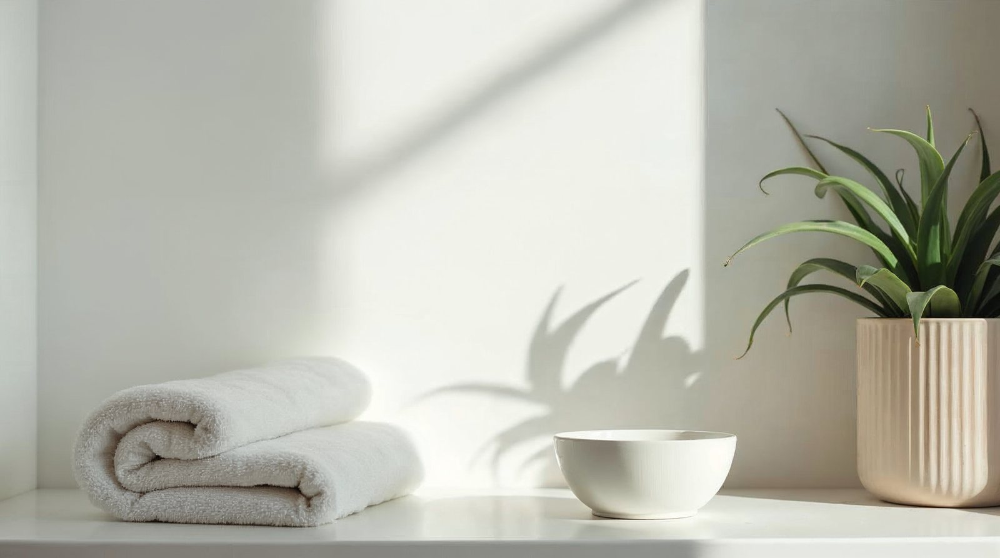

이종호 한의사 감수좋은꿈참사랑한의원 대표원장 (한의사 면허번호 19769)발행 2026-11-26 · 수정 2026-11-26
이 글의 차례
중요한 약속이 있는 날 아침, 거울 앞에서 턱 옆에 새로 올라온 붉은 뾰루지를 발견합니다. 지난달 이맘때도 그랬던 것 같습니다. 컨실러로 덮어 보다가 결국 손이 가고, 오후에는 그 자리가 더 부어 있습니다.
얼굴에 여드름이 자꾸 반복된다면 피부 겉만 보기보다 잠과 식사, 생리 주기, 스트레스가 언제 겹치는지부터 살펴보는 것이 좋습니다. 저는 여기에 화장품과 세안 습관, 대변까지 함께 여쭙습니다.
다만 고름이 크게 차거나, 손으로 만지면 단단하고 아픈 덩어리가 깊이 박혀 있거나, 패인 흉터가 남기 시작했다면 이야기가 다릅니다. 흉터는 한번 생기면 되돌리기 어려워, 이때는 피부과 진료를 먼저 받으시길 권합니다.
진료실에서 이런 말씀을 자주 듣습니다. 사춘기에 끝날 줄 알았는데 서른이 넘어서도 계속된다고요. 좋다는 세안제와 화장품을 다 써 봤는데 왜 또 나는지 모르겠다는 분도 계십니다.
여드름은 아프기보다 마음을 더 지치게 합니다. 사람을 만나기 전에 거울을 몇 번이고 보게 되고, 사진 찍는 자리를 피하게 되지요. 그 마음을 가볍게 넘기지 않고, 무엇이 겹칠 때 올라오는지 함께 찾아보고 싶습니다.
왜 같은 자리에 여드름이 반복될까요
여드름은 피지를 내보내는 털구멍이 막히면서 시작됩니다. 피지가 많아지고, 털구멍 입구의 각질이 두꺼워져 길이 막히면, 그 안에서 피부에 사는 균이 늘며 염증이 생깁니다. 이 흐름이 되풀이되는 자리에 여드름이 자꾸 올라옵니다.
처음에는 만져야 알 수 있는 좁쌀 같은 면포로 시작합니다. 염증이 생기면 붉은 뾰루지가 되고, 더 진행하면 노란 고름이 차거나 피부 깊이 단단한 덩어리가 생깁니다. 깊은 덩어리일수록 흉터가 남기 쉽습니다.
피지 양은 호르몬의 영향을 크게 받습니다. 그래서 사춘기에 많고, 성인 여성은 생리 전 1~2주 사이 턱과 입 주변에 올라오는 경우가 많습니다. 잠이 부족하거나 마음이 쫓기는 시기에도 피지와 염증이 늘어난다는 분이 많지요.
한의학에서는 얼굴에 열이 오르는 분, 속이 막혀 대변이 무거운 분, 몸이 차면서도 얼굴만 달아오르는 분을 나눠 봅니다. 같은 여드름이라도 몸이 기우는 쪽이 다르면 생활에서 손댈 곳이 달라지기 때문입니다. 이 구분은 피부과 진단을 대신하지 않고 생활을 살피는 길잡이로 씁니다.
얼굴만이 아니라 등과 가슴에 여드름이 나는 분도 많습니다. 운동 뒤 땀에 젖은 옷을 오래 입고 있거나, 샴푸와 린스가 등에 남은 채로 샤워를 마치는 습관이 겹치기도 합니다. 운동 뒤에는 바로 씻고, 머리를 먼저 헹군 뒤 몸을 씻는 순서로 바꿔 보세요.
잠·식사·주기·스트레스, 네 가지를 차례로 봅니다
여드름으로 오신 분께 제가 꼭 여쭙는 것이 네 가지 있습니다. 어느 하나가 원인이라기보다, 여러 가지가 겹친 주에 여드름이 올라오는 경우가 많기 때문입니다.
잠: 피부도 밤에 일합니다
밤늦게 잠드는 날이 이어지면 피부도 쉬는 시간을 잃습니다. 저는 몇 시간 주무셨는지보다 몇 시에 잠드는지가 더 궁금합니다. 새벽 두세 시에 잠드는 생활이 이어지면 아침 거울 속 얼굴부터 달라진다는 분이 많습니다.
잠과 피부가 어떻게 얽히는지는 잠이 부족하면 피부가 푸석하고 트러블이 나는 이유는 무엇인가요?에 따로 정리해 두었습니다.
잠드는 일 자체가 어렵다면 잠이 잘 오지 않을 때 한의원에서는 무엇을 먼저 살피나요?도 함께 보셔도 좋습니다.
식사: 무엇을 먹었는지와 언제 비웠는지
단 음료와 흰 빵, 과자처럼 혈당을 빠르게 올리는 음식, 그리고 일부 유제품이 여드름과 관련 있다는 연구가 있습니다. 다만 사람마다 차이가 커서 한꺼번에 끊기보다 먹은 날과 올라온 날을 견주어 보시길 권합니다.
늦은 밤 기름진 야식과 술, 며칠씩 막힌 대변도 함께 봅니다. 대변을 못 본 날 얼굴이 더 붉고 뾰루지가 올라온다는 분이 적지 않습니다. 물과 채소를 넉넉히 두고, 저녁은 잠들기 서너 시간 전에 마치는 것부터 해 보세요.
주기: 생리 전 1~2주를 표시해 봅니다
생리 전마다 턱선을 따라 여드름이 올라온다면 달력에 생리 시작일과 여드름이 올라온 날을 함께 적어 보세요. 두세 달만 적어도 흐름이 보입니다. 이 시기에는 대변이 무거워지거나 몸이 붓는 분도 많아 함께 여쭙습니다.
생리가 몇 달씩 건너뛰거나, 털이 눈에 띄게 늘거나, 체중이 갑자기 늘면서 여드름이 심해졌다면 호르몬 쪽 확인이 필요할 수 있습니다. 이때는 산부인과나 내분비 쪽 진료를 먼저 권해 드립니다.
스트레스: 마음이 바쁘면 손이 얼굴로 갑니다
시험이나 마감, 이직을 앞둔 몇 주 사이 여드름이 심해졌다는 분이 많습니다. 긴장하면 잠이 얕아지고, 생각에 잠기면 손이 자꾸 얼굴로 가 턱을 괴거나 뾰루지를 만지게 되지요.
어른이 되어 턱선에 반복되는 뾰루지는 어른이 되어서도 턱선에 뾰루지가 반복될 때는 무엇을 먼저 살피나요?에서 더 자세히 보실 수 있습니다.

화장품과 마스크, 얼굴에 닿는 것
여드름이 나면 더 꼼꼼히 가리고 싶어집니다. 그런데 두껍게 덮은 화장과 기름기 많은 제품이 털구멍을 다시 막기도 합니다. 여드름 피부라면 제품 설명에 털구멍을 덜 막도록 만들었다는 표시가 있는지 살펴보세요.
지우는 일도 중요합니다. 화장을 한 날은 잠들기 전에 꼭 지우되, 여러 번 문지르거나 각질 제거제를 자주 쓰면 오히려 피부가 예민해집니다. 마스크나 헬멧 끈, 휴대폰이 닿는 자리에만 여드름이 몰린다면 마찰과 땀을 먼저 의심해 봅니다.
자국과 흉터는 이렇게 나눠 봅니다
여드름이 가라앉은 뒤 남는 흔적은 몇 가지로 나뉩니다. 붉은 자국은 염증이 가라앉는 동안 한동안 남았다가 서서히 옅어지는 경우가 많고, 갈색 자국은 햇볕을 받으면 더 짙어지기 쉽습니다.
자국이 신경 쓰인다면 자외선 차단제를 챙기고 손으로 만지지 않는 것부터 시작합니다. 반면 피부가 움푹 패거나 볼록하게 솟은 흉터는 저절로 메워지기 어려워, 피부과에서 상담을 받아 보시길 권합니다.
여드름과 헷갈리기 쉬운 피부
얼굴에 붉게 올라온다고 다 여드름은 아닙니다. 아래는 진료실에서 흔히 헷갈리는 경우입니다. 최종 진단은 피부과에서 받으시는 것이 기준입니다.
- 주사(딸기코라고도 부름): 볼과 코가 쉽게 붉어지고 화끈거리며, 좁쌀 같은 면포는 잘 보이지 않는 편입니다. 뜨거운 음식, 술, 온도 변화에 붉어집니다.
- 모낭염: 이마나 가슴, 등에 비슷한 크기의 작은 뾰루지가 고르게 퍼지고 가려움이 함께 오기도 합니다. 곰팡이가 원인인 경우도 있어 피부과에서 나눠 봅니다.
- 입 주위 피부염: 입과 코 주변에 작은 붉은 좁쌀이 모여 나고, 입술 바로 둘레는 비켜 가는 경우가 많습니다.
- 접촉피부염: 새 화장품이나 마스크가 닿은 자리를 따라 붉고 가렵게 올라옵니다.
먼저 이렇게 여쭙니다
처음부터 정확하게 설명하지 못하셔도 괜찮습니다. 아래 질문을 떠올려 오시면 진료실에서 이야기가 한결 쉽게 풀립니다.
- 이마, 볼, 턱, 등 가운데 어디에 주로 올라오나요? 고름이 차거나 단단하고 아픈 덩어리도 있나요?
- 생리 주기와 맞물려 올라오나요? 생리는 규칙적인가요?
- 요즘 몇 시에 잠드시나요? 마음 쓰이는 일이 많은 시기인가요?
- 대변은 며칠에 한 번 보시나요? 못 본 날 피부가 더 붉어지나요?
- 단 음료나 야식, 술은 일주일에 몇 번쯤인가요?
- 쓰고 있는 세안제·화장품과, 피부과에서 처방받은 약은 무엇인가요?
일상에서 먼저 해 볼 수 있는 것
- 아침저녁 미지근한 물과 순한 세안제로, 문지르지 말고 거품으로 부드럽게 씻기
- 여드름은 짜거나 뜯지 않고, 턱을 괴거나 얼굴을 만지는 습관 줄이기
- 베갯잇과 수건은 자주 갈고, 휴대폰 화면도 가끔 닦기
- 새 화장품은 한 번에 하나씩 바꾸고, 두 주쯤 반응을 보기
- 잠드는 시각을 일정하게 두고, 잠들기 서너 시간 전에는 저녁을 마치기
- 단 음료와 야식을 줄이고 채소와 물을 넉넉히 챙겨 대변을 편하게 하기
여드름을 짜면 염증이 더 깊어지고 자국과 흉터가 남기 쉽습니다. 거울 앞에서 손이 가려 할 때 한 번만 손을 내려놓아 보세요. 손톱을 짧게 깎아 두는 것도 도움이 됩니다.
한꺼번에 다 바꾸려 하면 오래가기 어렵습니다. 잠드는 시각 하나, 짜지 않기 하나부터 몸에 붙여 보세요. 못 지킨 날은 다음 날 다시 하면 됩니다.
예를 들면 이런 경우입니다
실제 어느 분의 사연이 아니라, 진료실에서 자주 보는 모습을 바탕으로 그려 본 장면입니다.
예를 들어 시험을 앞둔 수험생이 새벽까지 공부하며 단 음료로 버티는 경우, 이마와 턱에 여드름이 한꺼번에 올라오기 쉽습니다. 잠드는 시각을 30분씩 당기고, 음료를 물로 바꾼 날을 적어 오시도록 권합니다.
예를 들어 생리 전마다 턱선에 깊은 뾰루지가 반복되고 그 무렵 대변이 무거워지는 직장인이라면, 생리 시작일과 대변, 여드름이 올라온 날을 두세 달 함께 적어 오시도록 합니다. 겹치는 흐름이 보이면 그 시기의 식사와 잠부터 함께 정리합니다.
예를 들어 매일 면도를 하는 직장인이 턱과 목에 뾰루지가 반복되는 경우, 여드름과 면도 자극, 털이 피부 안으로 파고드는 것이 섞여 있을 수 있습니다. 면도 방향과 날을 바꾼 날을 함께 적어 오시도록 하고, 모양이 헷갈리면 피부과 확인을 권합니다.
스스로 점검해 보세요
- 생리 전 1~2주 사이 턱과 입 주변에 반복해서 올라온다
- 새벽에 잠드는 날이 일주일에 세 번 넘는다
- 단 음료나 야식을 먹은 다음 날 뾰루지가 늘어난다
- 대변을 이틀 넘게 못 본 날 얼굴이 더 붉고 거칠다
- 거울을 볼 때마다 여드름을 짜거나 만진다
- 마스크·휴대폰·손이 닿는 자리에 몰려서 난다
- 깊고 아픈 덩어리가 생기거나 패인 흉터가 남기 시작했다
점수를 매기려는 목록은 아닙니다. 해당하는 줄에 표시해 오시면 그 줄부터 이야기를 시작하겠습니다. 마지막 줄에 해당한다면 피부과 진료를 먼저 받아 보세요.
얼마나 지켜보고 언제 상담할까요
세안과 잠, 식사를 바꾼 뒤에는 적어도 6~8주는 지켜보세요. 털구멍이 막혀 여드름이 겉으로 드러나기까지 몇 주가 걸리기 때문에, 며칠 만에 달라지기를 기대하면 금방 지치기 쉽습니다.
두 달쯤 지나도 같은 자리에 계속 올라오거나 점점 넓어진다면 상담을 권합니다. 고름이 크게 차거나 깊은 덩어리, 흉터가 보이면 기다리지 말고 피부과 진료를 먼저 받으세요.
한의원에서 함께 살필 수 있는 경우
- 생리 전마다, 혹은 스트레스와 잠 부족이 겹칠 때마다 반복되는 경우
- 변비나 소화 불편, 얼굴로 열이 오르는 느낌이 함께 있는 경우
- 피부과 치료를 받으면서 몸 전체의 리듬도 함께 살피고 싶은 경우
좋은꿈참사랑한의원에 처음 오시면 진맥부터 합니다. 저는 처음 오신 분이든 다시 오신 분이든 모든 분께 맥을 짚습니다. 맥을 짚는 동안 잠과 소화, 대변, 체온, 생리 주기, 요즘 마음 쓰이는 일을 여쭙고, 필요하다고 판단될 때 혀도 봅니다.
이어서 여드름이 올라오는 자리와 모양, 고름이나 깊은 덩어리, 흉터가 있는지 살피고, 피부과에서 받은 진단과 쓰는 약을 확인합니다. 피부과 진료가 먼저라고 판단되면 왜 그런지 말씀드리고 안내합니다.
그다음 침, 한약 상담 가운데 지금 상태에 맞는 방법을 함께 정합니다. 치료 중에는 "괜찮으세요?" 하고 여쭙고, 편하면 이어 가고 불편하면 멈춥니다. 다시 오시면 지난번 이후 잠든 시각과 생리 주기, 대변이 어땠는지부터 이어서 여쭙습니다.
이렇게 기록해 오시면 상담이 쉬워집니다
여드름은 진료실에 오는 날 마침 가라앉아 있는 경우가 많습니다. 기억보다 기록이 힘이 됩니다. 4~8주만 한 줄씩 적어 보세요. 생리 주기와 겹치는지 보려면 적어도 두 번의 주기는 지나야 흐름이 드러납니다. 휴대폰 메모장에 날짜와 한 단어만 남겨도 충분합니다.
- 새로 올라온 날과 자리, 고름·덩어리 여부
- 생리 시작일과 끝난 날
- 전날 잠든 시각
- 단 음료, 야식, 술을 먹은 날
- 대변을 본 날과 못 본 날
- 새로 바꾼 화장품·세안제와 바꾼 날, 쓰는 약 이름
심한 날 찍어 둔 사진이 있으면 진료실에서 모양을 설명하는 데 도움이 됩니다. 빠진 날이 있어도 괜찮습니다. 기억나는 만큼만 적어 오시면 나머지는 제가 여쭙겠습니다.
이런 증상은 먼저 확인이 필요합니다
- 고름이 크게 차거나, 피부 깊이 단단하고 아픈 덩어리가 여러 개 생기는 경우
- 패이거나 볼록한 흉터가 남기 시작한 경우
이런 신호가 있으면 한의원보다 가까운 병원이나 응급실을 먼저 찾으세요.
거울 앞에서 한숨 쉬던 아침이 여러 번이셨을 겁니다. 피부만 보지 않고 그 무렵의 잠과 식사, 마음까지 함께 살펴보겠습니다. 다음에 오시면 지난 한 달 동안 여드름이 올라온 날과 잠든 시각부터 여쭙겠습니다.

여쭙는 것
- 이마, 볼, 턱, 등 가운데 어디에 주로 올라오나요? 고름이 차거나 단단하고 아픈…
- 생리 주기와 맞물려 올라오나요? 생리는 규칙적인가요?
- 요즘 몇 시에 잠드시나요? 마음 쓰이는 일이 많은 시기인가요?
생활에서 해 볼 것
- 아침저녁 미지근한 물과 순한 세안제로, 문지르지 말고 거품으로 부드럽게 씻기
- 여드름은 짜거나 뜯지 않고, 턱을 괴거나 얼굴을 만지는 습관 줄이기
- 베갯잇과 수건은 자주 갈고, 휴대폰 화면도 가끔 닦기
한의원에서 함께 살필 것
- 생리 전마다, 혹은 스트레스와 잠 부족이 겹칠 때마다 반복되는 경우
- 변비나 소화 불편, 얼굴로 열이 오르는 느낌이 함께 있는 경우
- 피부과 치료를 받으면서 몸 전체의 리듬도 함께 살피고 싶은 경우
먼저 확인이 필요한 신호
- 고름이 크게 차거나, 피부 깊이 단단하고 아픈 덩어리가 여러 개 생기는 경우
- 패이거나 볼록한 흉터가 남기 시작한 경우
한눈에 보는 표
| 구분 | 핵심 |
|---|---|
| 여쭙는 것 | 이마, 볼, 턱, 등 가운데 어디에 주로 올라오나요? 고름이 차거나 단단하고 아픈 덩어리도 있나요? 생리 주기와 맞물려 올라오나요? 생리는 규칙적인가요? |
| 생활에서 해 볼 것 | 아침저녁 미지근한 물과 순한 세안제로, 문지르지 말고 거품으로 부드럽게 씻기 여드름은 짜거나 뜯지 않고, 턱을 괴거나 얼굴을 만지는 습관 줄이기 |
| 한의원에서 함께 살필 것 | 생리 전마다, 혹은 스트레스와 잠 부족이 겹칠 때마다 반복되는 경우 변비나 소화 불편, 얼굴로 열이 오르는 느낌이 함께 있는 경우 |
| 먼저 확인이 필요한 신호 | 고름이 크게 차거나, 피부 깊이 단단하고 아픈 덩어리가 여러 개 생기는 경우 패이거나 볼록한 흉터가 남기 시작한 경우 |
자주 묻는 질문
여드름은 한의원에서 어떻게 살피나요?
피부 상태와 함께 잠, 소화와 대변, 체온, 생리 주기, 스트레스를 여쭙고 진맥으로 몸 전체의 리듬을 살핍니다. 피부과 진료가 먼저 필요한 경우는 따로 안내합니다.
피부과 치료와 함께 받아도 되나요?
쓰고 있는 바르는 약과 먹는 약을 모두 알려 주세요. 약은 처방한 의사와 상의 없이 끊거나 줄이지 않습니다.
흉터도 살피나요?
흉터가 남기 시작했거나 깊은 덩어리가 반복된다면 피부과 진료를 먼저 권합니다.
유제품이나 단 음식을 끊어야 하나요?
관련이 있다는 연구가 있지만 사람마다 달라, 한꺼번에 끊기보다 먹은 날과 올라온 날을 함께 적어 견주어 보시길 권합니다.
좋은꿈참사랑한의원은 재진 때 지난번 이야기부터 이어서 여쭙니다. 진료시간과 예약은 오시는 길에서 확인하세요.
어디서 상담받을 수 있나요?
좋은꿈참사랑한의원은 서울 동작구 만양로2길 2 신성빌딩 3층·5층(서울 동작구 상도동, 7호선 상도역 3번 출구 근처)에 있습니다. 한의사 3명(이종호 대표원장, 조영기 수석진료원장, 정원영 진료원장)이 진료합니다. 진료시간은 평일 09:30~20:00(점심 13:00~14:00), 토·일·공휴일 09:30~15:00이며, 방문 전 전화로 확인을 권합니다. 예약은 네이버 예약, 카카오톡 상담, 전화 02-815-7510로 받습니다.
이 글은 일반적인 건강 정보이며 개인의 진단이나 치료를 대신하지 않습니다. 증상이 있거나 복용 중인 약이 있다면 진료를 통해 확인하세요. 치료 효과는 개인마다 다를 수 있습니다.
작성 기준: 일반적으로 알려져 있는 건강 정보를 참고해 정리했습니다(대표원장 감수). 증상 기록은 1~2주 동안 하루 1회, 비슷한 시간에 적어 오시면 지난 상태와 비교하기 쉽습니다.